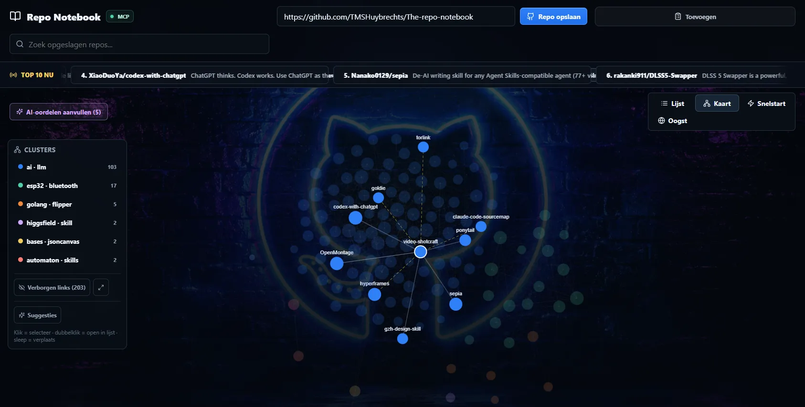
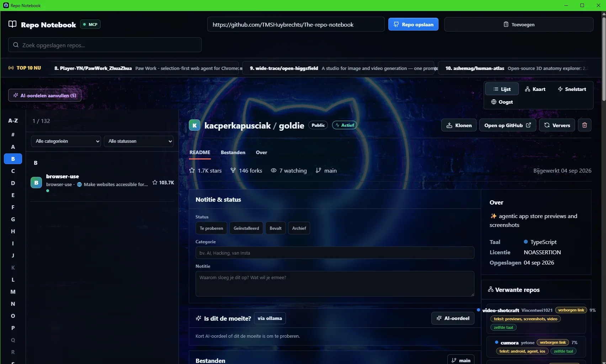
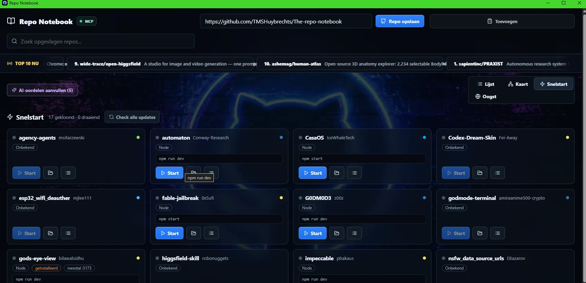
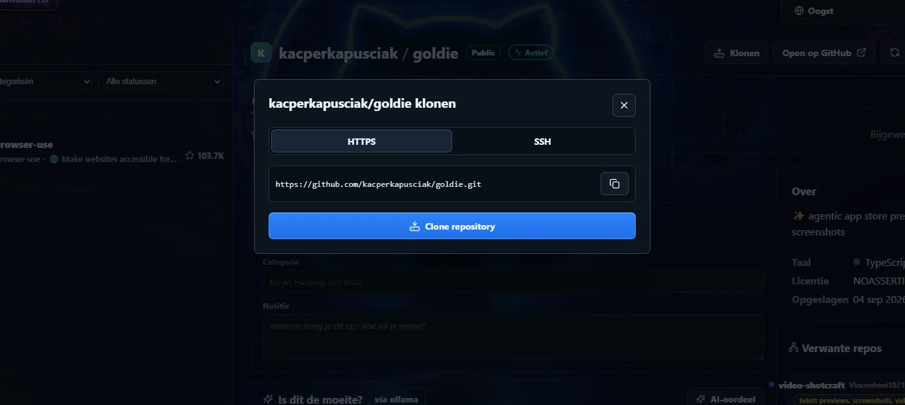
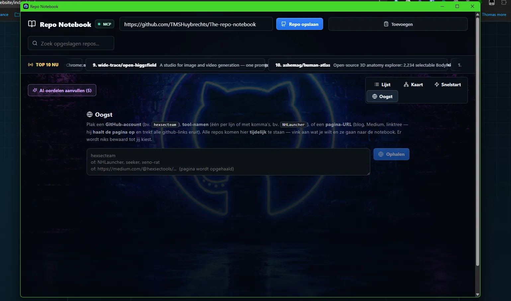

Discover.
Organize.
Understand.
Run.
Repo Notebook brengt repository discovery, AI-beoordeling, gerelateerde projecten, graph mapping, cloning en local quickstart samen in één control center.

Stop losing good repositories in a sea of tabs.
Save repos, browse trending projects, add your own categories and notes, and let AI help decide whether something is worth your time.
- Trending repo feed
- Personal categories + status
- AI score / judgement
- Stars, forks, language and activity
- Related repository suggestions

Your repository collection becomes a living graph.
Repositories are grouped into clusters so patterns become visible: AI tools, ESP32 projects, Flipper tooling, skills, automation and more.
From GitHub to running locally, without command-line archaeology.
Clone a project, detect how it starts and launch supported projects directly from the notebook. Quickstart turns a saved repo into something you can actually use.
- Clone via HTTPS or SSH
- Project type detection
- Detected start commands
- Open project folders
- Update checks


Feed it a creator, tool or page. Harvest the repositories.
Paste a GitHub account, tool name or a page URL. Repo Notebook extracts repository links and lets you decide what belongs in your collection.

GitHub stores repositories.
Repo Notebook stores context.
The goal is not another bookmark list. It is a working memory for developers, researchers and builders who constantly find useful code and want to understand, compare, classify and actually run it later.